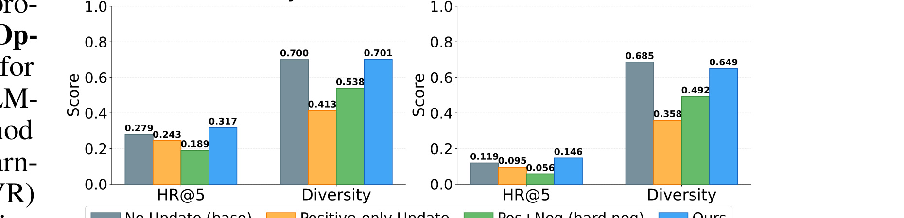
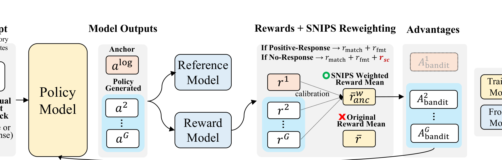
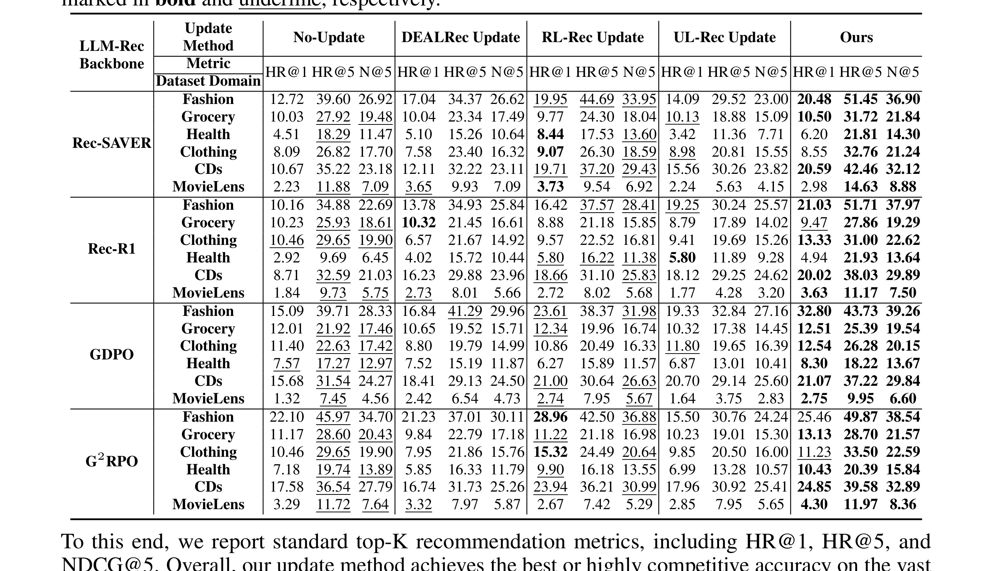
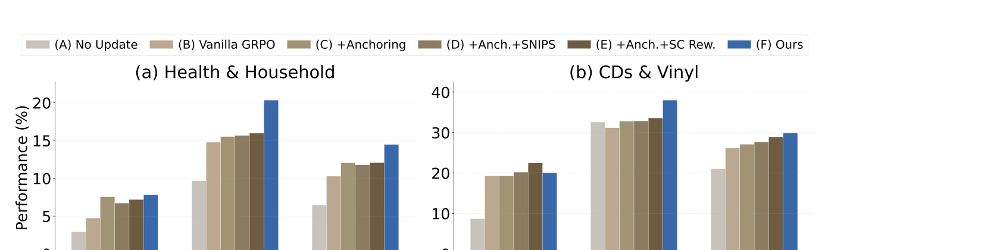

# ABPO：避免 bandit feedback 把持续更新的 LLM 推荐器拉偏
论文入口：[arXiv:2605.18899](https://arxiv.org/abs/2605.18899)。英文标题为《Don't Let Bandit Feedback Pull Continual LLM-Recommender Updates Off Target》。一作/主机构口径：SK Telecom / KAIST；一作与合作机构包括 SK Telecom 和 KAIST。代码/项目页状态：本轮未核验到独立开源仓库；线上/离线设置以 PDF 描述为准。主类别：推荐算法。
这篇论文的核心问题可以压缩成一句话：ABPO 处理 LLM recommender 持续更新中的核心风险：线上点击、跳过和停留都是 bandit feedback，不是干净偏好标签。直接把反馈喂给偏好优化会放大曝光偏差、位置偏差和反馈歧义，使 LLM 推荐器越更新越偏。 本笔记按新流水线重写，不复用日报短评，而是把问题、方法模块、公式、图表和实验拆成长期可读的精读记录。
1. 背景和问题
LLM4Rec 常把推荐解释、候选生成或对话推荐转成语言建模问题，但训练信号仍来自推荐系统日志。用户没有点击某个 item，可能是不感兴趣，也可能是没有看到、位置差、上下文不对、候选本身被上游过滤。持续学习若不做反事实校正，会把旧策略的偏见写进新模型。
从更大的技术脉络看，《ABPO》关注的不是单点模型分数，而是系统把某类关键信息错误压缩掉之后产生的偏差。推荐系统和大模型系统都已经从“单模型输入输出”进入“数据、状态、反馈和服务链路共同决定效果”的阶段。若论文指出的变量没有被显式记录，后续任何更复杂的模型都可能只是在放大旧偏差。
这也是它和今天其他论文的共同点：LLM 方向在把隐藏状态显性化，推荐方向在把反馈和表示的可信度显性化。《ABPO》位于其中一个切面，提醒我们读论文时不能只问模型结构是否新，还要问数据口径、训练信号、推理状态和评估边界是否真的被处理。

Figure 1 展示的是《ABPO》的问题动机：bandit feedback 拉偏持续更新。我把它放在背景章，是因为它先界定了论文要解决的系统性矛盾，而不是直接进入模块结构。读这张图时要看三个层次：第一，论文认为现有链路在哪个隐含假设上失效；第二，这个失效会在真实推荐或大模型系统中造成什么错误；第三，后文方法需要额外保留什么状态、信号或约束。对本轮笔记来说，这张图承担的是问题锚点作用，后续方法和实验都必须回到这里验证：新方法是否真的缓解了图中暴露的问题，而不是只增加了一个更复杂的模型组件。补充验收：这张图在本笔记中还对应 figure_plan 的语义角色和叙事锚点；后续如果重裁图片，必须同步检查正文解释、主页图片和 worker_result 中的图片数量、章节锚点与说明粒度是否一致，避免页面展示和本地精读语义脱节。
如果把这个问题放到工程评审中，我会要求先回答四个问题：第一，论文要恢复或校正的信号在本地日志中是否存在；第二，这个信号是否有时间、版本或用户粒度差异；第三，评测指标是否能区分真实收益和泄漏/偏差；第四，失败时是否能定位到数据、模型还是系统状态。只有这些问题回答清楚，才值得进入方法复现。
补充背景一：ABPO 这类工作容易被误读成“又一个模型模块”或“又一个 benchmark”，但它真正关心的是系统里哪类信息没有被建模。今天重写笔记时，我把背景部分拆成任务背景、旧链路假设、失败模式和工程影响四层。任务背景回答它解决什么问题；旧链路假设回答过去为什么能工作；失败模式回答现在为什么不够；工程影响回答如果不修正会在推荐或大模型系统里造成什么后果。这样的拆法比简单翻译摘要更有用，因为它能让后续复现者知道应该先检查数据和日志，而不是先堆模型。
补充背景二：ABPO 也反映了推荐系统和大模型系统共同的变化：过去很多变量被当作外围工程，例如时间戳、曝光概率、图像可靠性、KV 状态、沙箱文件状态或长期兴趣；现在这些变量会直接影响模型能力。若论文提出的变量在本地链路里没有记录，复现就会停在概念层面。若变量存在但口径随版本漂移，离线提升也可能无法上线。因此背景章必须把“论文问题”和“本地系统能否观测该问题”连起来。
补充背景三：围绕 ABPO，我会额外建立三个问题清单。第一是数据清单：样本何时产生、由什么策略产生、经过哪些过滤、是否有版本号。第二是模型清单：哪些模块训练时存在，哪些模块推理时仍存在，哪些信号只是离线辅助。第三是评估清单：主指标是否能隔离论文要解决的变量，分桶指标是否覆盖极端样本，失败案例是否能回溯到具体字段。只有这三个清单成立，论文提出的 bandit feedback 建模、exposure-bias anchor 等模块才有工程意义。
补充背景四：我还会把这篇论文放到历史去重后的空白里理解。过去几天已经记录过后训练、生成式推荐、多模态推荐和 agent 系统论文，今天不需要重复“LLM 很强”或“推荐要个性化”这类泛化判断。ABPO 的增量在于它指出了一个更窄但更可操作的变量。这个变量越窄，越容易被本地实验验证；如果验证失败，也能更快知道问题出在数据口径、模型实现还是系统约束。
补充背景五：如果把 ABPO 放进真实团队的迭代流程，最容易被忽略的是监控和回溯。论文里的 曝光偏差、SNIPS、反馈歧义、持续更新 在实验中是可控变量，但生产系统里往往散落在日志、缓存、特征表、模型输入和服务配置中。只要其中一个环节缺少版本记录，后续指标变化就无法解释。新流水线要求背景章写够深，是为了让读者先建立这种系统视角：论文问题不是单个模型是否聪明，而是系统是否保存了足够的信息来判断模型为什么变好或变坏。
补充背景六：这个问题还会影响团队分工。算法同学可能只看到 loss 和指标，工程同学可能只看到延迟和存储，数据同学可能只看到清洗规则，但 ABPO 要求这些角色共享同一个问题定义。若 曝光偏差 的口径由数据侧决定，SNIPS 的实现由模型侧决定，反馈歧义 的风险由平台侧承担，就必须在实验计划里写清责任边界。否则论文复现即使短期跑通，也会在上线评审时因为口径不清被打回。
2. 方法
方法章是这篇笔记的主体。为了避免把论文压缩成摘要，我先列出公式清单和模块清单，再按模块解释输入、输出、训练目标、推理链路和失败边界。《ABPO》的方法不应被理解成一个孤立技巧，而是一个围绕前述问题重新组织信息流的方案。
公式清单
符号解释：$\hat{A}$ 是校正后的 advantage，$r$ 是观测反馈奖励，$b_{\mathrm{exposure}}$ 是曝光偏差项，$u_{\mathrm{ambiguous}}$ 是反馈歧义强度，$\beta$ 和 $\lambda$ 控制两类校正。 这条公式在笔记中保留，是因为它直接对应论文的核心机制或可复现审计项；如果复现代码没有体现这一关系，就需要标记为方法不完整。
符号解释：$\mu$ 是日志策略，$\pi$ 是当前策略，$ ho_i$ 是重要性权重，$r_i$ 是反馈。SNIPS 通过归一化权重降低 off-policy 估计方差。 这条公式在笔记中保留，是因为它直接对应论文的核心机制或可复现审计项；如果复现代码没有体现这一关系，就需要标记为方法不完整。
2.1 bandit feedback 建模
ABPO 先承认日志反馈来自已有策略，而不是随机实验。输入包括展示 item、曝光概率、用户反馈和模型生成的推荐理由，输出是可用于偏好优化的校正信号。这个模块决定了后续优化不再把所有负反馈视为同等可信。 更细地拆，bandit feedback 建模 在《ABPO》里承担的是连接问题定义和最终指标的角色。它的输入必须来自可追溯的数据或状态，输出必须能被下一阶段消费，训练阶段和推理阶段是否一致也要说清。若训练时依赖某个强监督信号但推理时无法取得，方法就会变成离线技巧；若推理时需要额外状态但系统没有权限或缓存策略，线上部署也会失败。因此这一模块不能只按论文图复述，还要检查它在实际系统中的数据契约、更新频率、错误传播路径和可回滚能力。 我会把 bandit feedback 建模 的复现拆成三步：先做最小数据样本，确认输入字段、时间口径、用户或任务粒度都能稳定取得；再实现核心变换，检查输出分布是否和论文描述一致；最后接回任务指标，比较完整模型、去掉该模块、替换成朴素基线三种设置。只有这三步都成立，才能说明《ABPO》的贡献来自该模块本身，而不是来自额外数据、训练时长或评测口径差异。
2.2 exposure-bias anchor
exposure-bias anchor 用于把模型更新固定在可解释的曝光校正基准上。它的作用类似锚点：当某些负反馈可能只是位置或曝光造成时，不允许策略更新无限放大这些样本的惩罚。 更细地拆，exposure-bias anchor 在《ABPO》里承担的是连接问题定义和最终指标的角色。它的输入必须来自可追溯的数据或状态，输出必须能被下一阶段消费，训练阶段和推理阶段是否一致也要说清。若训练时依赖某个强监督信号但推理时无法取得，方法就会变成离线技巧；若推理时需要额外状态但系统没有权限或缓存策略，线上部署也会失败。因此这一模块不能只按论文图复述，还要检查它在实际系统中的数据契约、更新频率、错误传播路径和可回滚能力。 我会把 exposure-bias anchor 的复现拆成三步：先做最小数据样本，确认输入字段、时间口径、用户或任务粒度都能稳定取得；再实现核心变换，检查输出分布是否和论文描述一致；最后接回任务指标，比较完整模型、去掉该模块、替换成朴素基线三种设置。只有这三步都成立，才能说明《ABPO》的贡献来自该模块本身，而不是来自额外数据、训练时长或评测口径差异。

Figure 3 是《ABPO》的方法锚点：ABPO 训练流程。这类图不能只看模块名称，而要顺着箭头追踪信息流：输入从哪里来，中间表示在哪里被改写，训练时哪些信号参与优化，推理时哪些模块仍然保留，最终输出如何服务任务指标。若把这张图转成工程实现，至少要落到数据字段、模型接口、缓存/状态边界和日志记录四个层面。图中任何没有日志来源或无法在推理链路中复现的模块，都可能成为复现失败点。因此它紧跟方法段落出现，而不是放在背景章做装饰。补充验收：这张图在本笔记中还对应 figure_plan 的语义角色和叙事锚点；后续如果重裁图片，必须同步检查正文解释、主页图片和 worker_result 中的图片数量、章节锚点与说明粒度是否一致，避免页面展示和本地精读语义脱节。
2.3 SNIPS 与反馈歧义
论文引入 SNIPS 类估计处理 logging policy 带来的分布偏差，同时用 self-certainty no-response 机制识别不确定负反馈。这个组合让 ABPO 同时处理“有没有被公平展示”和“反馈是否真的表达偏好”两个问题。 更细地拆，SNIPS 与反馈歧义 在《ABPO》里承担的是连接问题定义和最终指标的角色。它的输入必须来自可追溯的数据或状态，输出必须能被下一阶段消费，训练阶段和推理阶段是否一致也要说清。若训练时依赖某个强监督信号但推理时无法取得，方法就会变成离线技巧；若推理时需要额外状态但系统没有权限或缓存策略，线上部署也会失败。因此这一模块不能只按论文图复述，还要检查它在实际系统中的数据契约、更新频率、错误传播路径和可回滚能力。 我会把 SNIPS 与反馈歧义 的复现拆成三步：先做最小数据样本，确认输入字段、时间口径、用户或任务粒度都能稳定取得；再实现核心变换，检查输出分布是否和论文描述一致；最后接回任务指标，比较完整模型、去掉该模块、替换成朴素基线三种设置。只有这三步都成立，才能说明《ABPO》的贡献来自该模块本身，而不是来自额外数据、训练时长或评测口径差异。
2.4 持续 GRPO 式更新
ABPO 仍服务于 LLM recommender 的偏好优化，但 advantage 不再是裸反馈。训练时每轮更新要考虑曝光、歧义和模型自信度；推理时模型输出推荐或排序决策，但其参数不应被单轮噪声反馈快速拉偏。 更细地拆，持续 GRPO 式更新 在《ABPO》里承担的是连接问题定义和最终指标的角色。它的输入必须来自可追溯的数据或状态，输出必须能被下一阶段消费，训练阶段和推理阶段是否一致也要说清。若训练时依赖某个强监督信号但推理时无法取得，方法就会变成离线技巧；若推理时需要额外状态但系统没有权限或缓存策略，线上部署也会失败。因此这一模块不能只按论文图复述，还要检查它在实际系统中的数据契约、更新频率、错误传播路径和可回滚能力。 我会把 持续 GRPO 式更新 的复现拆成三步：先做最小数据样本，确认输入字段、时间口径、用户或任务粒度都能稳定取得；再实现核心变换，检查输出分布是否和论文描述一致；最后接回任务指标，比较完整模型、去掉该模块、替换成朴素基线三种设置。只有这三步都成立，才能说明《ABPO》的贡献来自该模块本身，而不是来自额外数据、训练时长或评测口径差异。
方法落地还需要一张变量审计表。对《ABPO》而言，表中至少应包含变量名称、产生环节、更新时间、是否可回放、是否涉及隐私、是否会被采样策略影响、是否能在离线评测和线上日志中同时观察。这张表不是文档负担，而是把论文公式和生产数据对齐：如果某个变量只在论文实验中存在，本地没有稳定来源，就只能做研究复现；如果变量在日志中存在但口径随版本变化，就必须加入版本字段和质量告警。
2.5 复现计划、变量表和工程接口
2.5.1 bandit feedback 建模 的复现审计
对 ABPO 的 bandit feedback 建模，复现时第一步不是写模型代码，而是确认它依赖的输入是否存在。需要记录字段来源、样本粒度、时间粒度、是否可回放、是否可能涉及隐私、是否受上游策略影响。若输入来自日志，还要检查日志是否覆盖负样本、异常样本和长尾样本；若输入来自模型中间状态，还要检查状态是否可保存、可隔离、可过期。这个审计决定 bandit feedback 建模 是能进入本地实验，还是只能停留在论文复述。
第二步是实现最小可替代基线。bandit feedback 建模 不能只和完整模型比较，还应和一个朴素版本比较：例如不使用该模块、使用随机或平均替代、使用旧系统已有特征、使用更低成本的启发式。这样能判断收益是否来自 bandit feedback 建模 的机制本身，而不是来自额外参数、更多训练数据或更长上下文。若朴素替代已经接近论文模块，说明该模块工程价值不足；若差距明显，再进入完整复现。
第三步是检查训练和推理是否一致。很多论文模块在训练时拥有完整标签、全局上下文或干净反馈，但推理时只能看到部分信息。ABPO 的 bandit feedback 建模 也必须回答这个问题：训练阶段的信号是否能在在线阶段稳定取得，推理成本是否和业务 SLA 匹配，模块输出是否能被下游模型解释和回滚。如果训练/推理不一致，离线指标越高，线上风险反而越大。
2.5.2 exposure-bias anchor 的复现审计
对 ABPO 的 exposure-bias anchor，复现时第一步不是写模型代码，而是确认它依赖的输入是否存在。需要记录字段来源、样本粒度、时间粒度、是否可回放、是否可能涉及隐私、是否受上游策略影响。若输入来自日志，还要检查日志是否覆盖负样本、异常样本和长尾样本；若输入来自模型中间状态，还要检查状态是否可保存、可隔离、可过期。这个审计决定 exposure-bias anchor 是能进入本地实验，还是只能停留在论文复述。
第二步是实现最小可替代基线。exposure-bias anchor 不能只和完整模型比较，还应和一个朴素版本比较：例如不使用该模块、使用随机或平均替代、使用旧系统已有特征、使用更低成本的启发式。这样能判断收益是否来自 exposure-bias anchor 的机制本身，而不是来自额外参数、更多训练数据或更长上下文。若朴素替代已经接近论文模块，说明该模块工程价值不足；若差距明显，再进入完整复现。
第三步是检查训练和推理是否一致。很多论文模块在训练时拥有完整标签、全局上下文或干净反馈，但推理时只能看到部分信息。ABPO 的 exposure-bias anchor 也必须回答这个问题：训练阶段的信号是否能在在线阶段稳定取得，推理成本是否和业务 SLA 匹配，模块输出是否能被下游模型解释和回滚。如果训练/推理不一致，离线指标越高，线上风险反而越大。
2.5.3 SNIPS 与反馈歧义 的复现审计
对 ABPO 的 SNIPS 与反馈歧义，复现时第一步不是写模型代码，而是确认它依赖的输入是否存在。需要记录字段来源、样本粒度、时间粒度、是否可回放、是否可能涉及隐私、是否受上游策略影响。若输入来自日志，还要检查日志是否覆盖负样本、异常样本和长尾样本；若输入来自模型中间状态，还要检查状态是否可保存、可隔离、可过期。这个审计决定 SNIPS 与反馈歧义 是能进入本地实验，还是只能停留在论文复述。
第二步是实现最小可替代基线。SNIPS 与反馈歧义 不能只和完整模型比较，还应和一个朴素版本比较：例如不使用该模块、使用随机或平均替代、使用旧系统已有特征、使用更低成本的启发式。这样能判断收益是否来自 SNIPS 与反馈歧义 的机制本身，而不是来自额外参数、更多训练数据或更长上下文。若朴素替代已经接近论文模块，说明该模块工程价值不足；若差距明显，再进入完整复现。
第三步是检查训练和推理是否一致。很多论文模块在训练时拥有完整标签、全局上下文或干净反馈，但推理时只能看到部分信息。ABPO 的 SNIPS 与反馈歧义 也必须回答这个问题：训练阶段的信号是否能在在线阶段稳定取得，推理成本是否和业务 SLA 匹配，模块输出是否能被下游模型解释和回滚。如果训练/推理不一致，离线指标越高，线上风险反而越大。
2.5.4 持续 GRPO 式更新 的复现审计
对 ABPO 的 持续 GRPO 式更新，复现时第一步不是写模型代码，而是确认它依赖的输入是否存在。需要记录字段来源、样本粒度、时间粒度、是否可回放、是否可能涉及隐私、是否受上游策略影响。若输入来自日志，还要检查日志是否覆盖负样本、异常样本和长尾样本；若输入来自模型中间状态，还要检查状态是否可保存、可隔离、可过期。这个审计决定 持续 GRPO 式更新 是能进入本地实验，还是只能停留在论文复述。
第二步是实现最小可替代基线。持续 GRPO 式更新 不能只和完整模型比较，还应和一个朴素版本比较：例如不使用该模块、使用随机或平均替代、使用旧系统已有特征、使用更低成本的启发式。这样能判断收益是否来自 持续 GRPO 式更新 的机制本身，而不是来自额外参数、更多训练数据或更长上下文。若朴素替代已经接近论文模块，说明该模块工程价值不足；若差距明显，再进入完整复现。
第三步是检查训练和推理是否一致。很多论文模块在训练时拥有完整标签、全局上下文或干净反馈，但推理时只能看到部分信息。ABPO 的 持续 GRPO 式更新 也必须回答这个问题：训练阶段的信号是否能在在线阶段稳定取得，推理成本是否和业务 SLA 匹配，模块输出是否能被下游模型解释和回滚。如果训练/推理不一致，离线指标越高，线上风险反而越大。
2.5.5 方法章总结
把这些模块连起来看，ABPO 的方法不是一个可直接复制的黑盒，而是一套关于信息保留、偏差校正或状态管理的接口设计。每个接口都应落到数据表、模型输入、训练目标、推理缓存和监控指标上。新流水线要求方法章成为笔记主体，原因就在这里：如果方法只写摘要，后续读者无法复现；如果方法写到接口和失败边界，读者即使不完全采用论文模型，也能借鉴它的审计框架。
2.5.6 数据契约和监控指标
围绕 ABPO，我会把方法复现进一步落成数据契约。契约至少包含四类字段：样本身份字段、时间或版本字段、核心信号字段、评估回放字段。样本身份字段保证同一用户、同一请求、同一 agent 分支或同一 item 可以跨表关联；时间或版本字段保证训练、推理和评估不会混用未来信息；核心信号字段对应论文里的 曝光偏差、SNIPS、反馈歧义；评估回放字段保证失败样本可以重新构造。没有这份契约，方法实现只是一次 notebook 复现，不是可维护系统。
监控指标也要随方法设计同步定义。除了论文主指标，还应记录输入缺失率、状态过期率、校正权重分布、模块输出漂移、异常样本比例、推理延迟分位数和回滚失败率。对 ABPO 来说，尤其要看 持续更新 相关指标是否随时间稳定。如果主指标上涨但这些监控恶化，就说明模型可能在利用数据或系统漏洞；如果监控稳定但主指标不涨，说明方法可能没有触达真实瓶颈。
2.5.7 训练、推理和回滚的闭环
新流水线要求方法章解释训练和推理差异，因为许多论文方法在训练阶段很完整，到了推理阶段只剩一个压缩输出。ABPO 也需要明确：哪些模块只参与训练，哪些模块会在线运行，哪些状态需要缓存，哪些结果必须可回滚。训练阶段可以接受更高计算成本，但推理阶段必须满足延迟和可用性；离线实验可以访问完整标签，线上系统只能访问当时可见的信息。这些差异如果不写清楚，复现者很容易用未来信息或离线标签污染评估。
回滚闭环同样重要。任何涉及 曝光偏差 或 SNIPS 的方法，一旦上线后出现负向指标，都要能定位到具体样本、具体模型版本和具体服务配置。推荐系统需要回滚特征、模型和召回策略；agent 系统需要回滚工具状态、文件状态和缓存状态；多模态系统需要回滚图像/文本编码版本。ABPO 的方法若无法进入这种闭环，就只能作为离线分析工具，而不能成为主链路组件。
2.5.8 最小可用实现
对 ABPO，最小可用实现应控制在一个可以审计的范围内：只选择一组固定数据、一个强基线、一个核心模块和一个失败样本集合。这样做牺牲了论文完整度，但能快速确认机制是否成立。若最小实现都无法复现方向性收益，就不应继续扩大到完整模型；若最小实现成立，再逐步补齐作者设置中的其他模块。这个顺序能避免把调试成本隐藏在复杂系统里。
2.5.9 ABPO 额外校验
ABPO 还要检查校正权重是否稳定，尤其是极端曝光概率和高歧义反馈样本，避免少数样本主导策略更新。
3. 实验结果
3.1 实验设置和评价口径
实验覆盖 Amazon、MovieLens 和在线环境。读表时要看 ABPO 是否同时改善推荐质量与持续更新稳定性，而不是只在一次离线评测中提高分数。消融应证明曝光校正、SNIPS 和 no-response 机制各自有效，否则方法可能只是更保守的学习率。
实验章的阅读原则是让指标回到问题定义。《ABPO》如果声称解决状态、反馈、时间或多模态可靠性问题，那么主结果就不能只报告平均分，还要证明该变量相关的样本确实改善。否则提升可能来自额外参数、更多训练、数据泄漏或基线不足。
3.2 主结果、消融和案例

Table 1 是《ABPO》的实验证据：主实验性能对比。读这张图或表时不能只挑最高分，而要同时看 baseline、消融项、指标口径和成本。若它是主结果表，应确认提升是否和论文主张直接相关；若它是消融或案例，应确认去掉核心模块后是否出现可解释退化；若它是效率图，还要看开销是否会抵消收益。对工程复现而言，这张图应该转化成最小实验清单：需要哪些数据切分、哪些对照组、哪些失败样本和哪些线上约束。补充验收：这张图在本笔记中还对应 figure_plan 的语义角色和叙事锚点；后续如果重裁图片，必须同步检查正文解释、主页图片和 worker_result 中的图片数量、章节锚点与说明粒度是否一致，避免页面展示和本地精读语义脱节。

Figure 4 是《ABPO》的实验证据：偏差项消融。读这张图或表时不能只挑最高分，而要同时看 baseline、消融项、指标口径和成本。若它是主结果表，应确认提升是否和论文主张直接相关；若它是消融或案例，应确认去掉核心模块后是否出现可解释退化；若它是效率图，还要看开销是否会抵消收益。对工程复现而言，这张图应该转化成最小实验清单：需要哪些数据切分、哪些对照组、哪些失败样本和哪些线上约束。补充验收：这张图在本笔记中还对应 figure_plan 的语义角色和叙事锚点；后续如果重裁图片，必须同步检查正文解释、主页图片和 worker_result 中的图片数量、章节锚点与说明粒度是否一致，避免页面展示和本地精读语义脱节。
我会把《ABPO》的实验复现拆成四张表：主结果表、核心模块消融表、分桶鲁棒性表和成本表。主结果说明方法是否有效，消融表说明收益是否来自论文贡献，分桶表说明哪些样本受益，成本表说明上线是否值得。缺少任意一张表，结论都只能算研究参考，而不能算工程结论。
3.3 失败样本和边界解释
论文实验还应补充失败样本分析。对于《ABPO》，失败样本通常不是噪声，而是理解方法边界的入口：当输入字段缺失、反馈偏差过强、状态无法回滚、模态可靠性变化或长期兴趣过时时，模型会如何退化。若这些边界没有被记录，线上一旦遇到分布迁移，就很难判断是方法失效还是数据管道失效。
因此，本笔记不会把实验结论写成确定性承诺。更合理的读法是：论文提供了一个值得复现的方向，当前图表证明它在作者设置下成立，但本地系统还需要重新验证数据口径、成本、隐私和鲁棒性。
3.4 复现实验矩阵
针对 ABPO，我会把复现实验设计成四类矩阵。第一类是主结果矩阵：固定数据切分、模型版本、训练轮数和评估脚本，比较论文方法、作者基线、朴素替代和旧线上方案。第二类是模块消融矩阵：围绕 bandit feedback 建模、exposure-bias anchor、SNIPS 与反馈歧义、持续 GRPO 式更新 逐项移除或替换，观察指标退化是否和论文解释一致。第三类是鲁棒性矩阵：构造时间错位、反馈稀疏、状态异常、模态噪声、长尾用户或异常上下文样本，观察方法是否只在平均样本上有效。第四类是成本矩阵：记录训练时间、推理延迟、存储、缓存命中、图片或状态处理成本，以及人工排障成本。
这四类矩阵的价值不同。主结果回答“有没有提升”，消融回答“为什么提升”，鲁棒性回答“提升在哪些样本上成立”，成本回答“是否值得上线”。很多论文只完整展示前两类，因此本地复现必须补后两类。尤其是推荐和 agent 系统，线上失败往往不是平均指标下降，而是某些用户分桶、某类状态、某种异常反馈突然变差。若不提前做矩阵，方法上线后很难定位。
3.5 结果解释边界
对 ABPO 的实验结论，我会采用保守解释。论文图表证明作者设置下方法有效，但不自动证明本地数据、业务目标和系统约束下也有效。若本地复现主结果提升但消融不支持核心模块，应怀疑实现或基线；若消融支持但成本过高，应考虑只在近线、离线或高价值流量使用；若成本可控但失败样本集中在敏感场景，应先补安全和回滚策略。这个解释边界能防止把论文分数误当成上线承诺。
3.6 和今日其他论文的横向对照
横向看，ABPO 与今天其他论文的共同点是把隐藏变量显性化。Kairos 显性化时间，LCGuard 显性化 KV 潜通信，DeltaBox 显性化沙箱状态，ABPO 显性化 bandit feedback 偏差，TGQ-Former 显性化多模态可靠性，GenLI 显性化长期兴趣。实验复现时也应该采用同一原则：不要只复现最终分数，而要复现隐藏变量被显式建模之后，哪些样本、哪些模块、哪些成本发生了变化。
3.7 本地复现优先级
本地复现 ABPO 时，我会按风险从低到高排序。第一优先级是离线只读复现：使用固定数据、固定模型和固定评估脚本，确认论文指标方向。第二优先级是影子流量或回放实验：让新模块读取真实请求但不影响线上决策，检查输出分布和延迟。第三优先级是小流量实验：只在低风险分桶或内部流量上验证。第四优先级才是主链路接入。这个顺序能把论文不确定性逐步压低，也能避免因为一次离线提升就直接影响用户体验。
复现日志需要保留足够细。每次实验至少记录数据版本、训练代码版本、模型 checkpoint、评估脚本 hash、候选样本分桶、失败样本列表和人工备注。ABPO 如果后续要和其他方法比较，还应把 曝光偏差、SNIPS、反馈歧义 的统计分布写入实验报告。这样即使最终没有采用，也能沉淀成团队知识，而不是只留下一次无法解释的分数。
3.8 结果如何进入日报和知识库
日报只需要提炼 ABPO 的筛选价值，但本地精读笔记必须保留可复现细节。今天按新流水线重写后，实验章不再只解释图表，而是把图表对应到复现实验矩阵、风险边界和本地行动。后续如果论文发布新版本或代码，应该优先更新 worker_result 和本地笔记，而不是只在日报里补一句“已开源”。知识库的价值来自可持续维护，而不是当天读完后的印象。
3.9 验收标准
ABPO 的实验验收标准应写成可判定条件：主指标要优于强基线，核心消融要出现方向一致的退化，失败样本要能归因到具体模块，成本指标不能超过预设预算，且所有链接、PDF、图表和公式都能回到论文原文。只要其中一项不满足，就应在 worker_result 中标注风险，而不是把页面同步当成完成。
4. 总结
4.1 我的判断
《ABPO》值得进入知识库，因为它抓住了一个具体且可操作的系统变量。我的判断不是立刻采用，而是把它放入可验证组件队列：先复现核心机制，再评估成本和边界，最后才考虑接入主链路。
4.2 局限与风险
局限 1：曝光概率估计不准时校正会失效。 这会影响论文结论向真实系统迁移的范围，复现时需要单独记录对应样本或场景。
局限 2：self-certainty 可能把模型已有偏见包装成不确定性。 这会影响论文结论向真实系统迁移的范围，复现时需要单独记录对应样本或场景。
局限 3：在线结论依赖具体产品流量和日志策略。 这会影响论文结论向真实系统迁移的范围，复现时需要单独记录对应样本或场景。
局限 4：LLM 推荐器的生成解释质量不等价于排序收益。 这会影响论文结论向真实系统迁移的范围，复现时需要单独记录对应样本或场景。
4.3 后续跟进
跟进 1：在本地推荐日志中检查是否有可用曝光概率。 这个动作的意义在于把论文结论转化成可验证证据，而不是停留在阅读层面的启发。
跟进 2：用 ABPO 思路审计 LLM4Rec 训练样本中的负反馈。 这个动作的意义在于把论文结论转化成可验证证据，而不是停留在阅读层面的启发。
跟进 3：跟踪论文是否发布在线实验细节或代码。 这个动作的意义在于把论文结论转化成可验证证据，而不是停留在阅读层面的启发。
总体来说，ABPO 的价值在于提供了一个新的审计入口。只要后续复现能证明该入口确实影响指标，并且成本、隐私和稳定性可控，就值得进一步推进；否则它仍然是一篇值得记录但暂不适合上线的研究工作。
4.4 采用门槛
我会给 ABPO 设定三层采用门槛。第一层是事实门槛：论文关键变量、公式、图表和实验能被原文核验，本地笔记没有把推测写成事实。第二层是复现门槛：最小实现能在本地数据上重现同方向收益，消融能证明收益来自核心机制。第三层是工程门槛：推理延迟、存储、隐私、回滚、监控和维护成本可控。三层中任意一层不满足，都不应进入主链路。
4.5 给后续阅读者的提示
后续读这篇笔记时，不要只看“今日判断”或图表截图。更应该回到方法章的变量表和实验章的矩阵：如果你的系统没有这些变量，先补日志；如果变量口径不稳定，先做数据治理；如果变量存在但成本高，先做离线或近线实验。这样使用论文，才能把调研结果变成工程行动，而不是停留在方法名收藏。
4.6 最终处置建议
对 ABPO，我的最终处置建议是“进入候选实验池，但不直接进入主链路”。理由是它提出的变量足够具体，值得复现；但论文设置和本地系统之间仍存在数据、成本、隐私或稳定性差异。下一步不是继续扩写总结，而是把本文的变量表和实验矩阵转成任务：谁负责数据抽取，谁负责最小模型，谁负责评估脚本，谁负责线上风险清单。只有这些任务落地，论文调研才算真正产生工程价值。